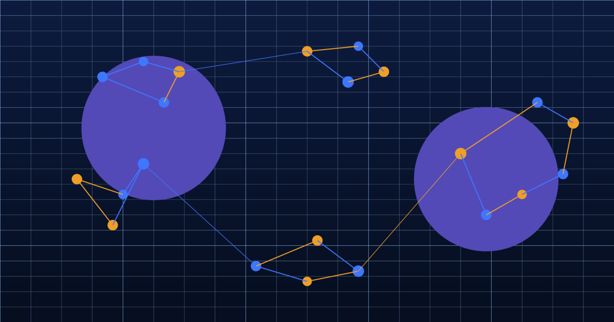

Published 19 February 2026 · 9 min read

For the better part of three decades, UK financial services analytics teams operated within an established duopoly when it came to third-party demographic intelligence. CACI's Acorn and Experian's Mosaic were not merely vendor options — they were infrastructure. Embedded in decisioning engines, credit models, marketing platforms, and regulatory reporting frameworks, they became the assumed foundation beneath customer intelligence.
That assumption is now being challenged from within. Conversations with heads of analytics, chief data officers, and customer intelligence leads at UK retail banks, insurers, and credit providers reveal a consistent and accelerating pattern: quiet but deliberate diversification away from legacy geodemographic products, driven not by dissatisfaction with vendor relationships but by a growing recognition that the underlying data architecture is no longer fit for the precision demands of modern financial services.
The core issue is temporal precision. Financial services operate in an environment where the economic conditions affecting a customer's financial resilience, borrowing behaviour, and switching propensity can shift materially within a quarter. Mortgage rate changes, energy price movements, regional employment shocks — these are not slow-moving forces. They restructure household financial behaviour rapidly and unevenly across geographic and demographic segments.
Both CACI and Experian have built capable products for a world where third-party demographic data was updated annually at best. But that world is increasingly at odds with the analytical demands being placed on it. A retail bank's credit risk model may incorporate Mosaic types as proxy variables for financial resilience — but if those types reflect a population profile from two or three years ago, the model is introducing systematic lag into a decisioning process that needs to respond to current conditions.
The consequences are not always visible in aggregate model performance metrics, because the lag affects all customers equally and the model continues to rank them in roughly the right order relative to each other. The problem emerges at the margins: the segment that was historically stable and low-risk but has experienced disproportionate financial stress since the data was compiled; the postcode cluster that was flagged as high-value for cross-sell but has seen significant household composition change; the Mosaic type that correlated with low churn before interest rates rose but whose loyalty assumptions no longer hold.
The FCA's Consumer Duty regulations, which came into full force in 2023 and 2024, have sharpened focus on whether financial services firms can demonstrate that their understanding of customer vulnerability is current and proportionate. A firm that relies on demographic classifications built before the cost-of-living crisis to assess financial vulnerability in 2026 faces a growing tension between its regulatory obligations and the data it is actually using to meet them.
This is not a hypothetical risk. Supervision teams are increasingly asking firms to evidence how their customer intelligence frameworks account for the economic changes of the past three years. A response that points to a Mosaic or Acorn classification as the primary source of vulnerability insight — without being able to demonstrate that those classifications reflect current household financial stress levels — is unlikely to satisfy a determination focused on outcomes rather than inputs.
This regulatory pressure is one of the drivers behind the growing appetite among FS analytics teams for data sources that can demonstrate continuous refresh. The ability to show that your customer vulnerability model is informed by current insolvency filing rates, current claimant data, and current mortgage pressure signals — rather than a pre-crisis demographic snapshot — is becoming a meaningful differentiator in regulatory dialogue.
Ready to see what's beyond the incumbents?
Run your postcodes through 175+ continuously refreshed attributes. No contract, no commitment — just better data.
The firms making the most progress in this space are not, in the main, replacing CACI or Experian wholesale. They are building a layered architecture in which legacy geodemographic classifications continue to provide historical continuity and broad segmentation, while continuously refreshed attributes handle the tasks that require current precision: vulnerability assessment, churn risk scoring, cross-sell timing, and marketing suppression.
Cogstrata's model fits this architecture directly. Our 500+ postcode-level attributes — derived from continuous processing of Land Registry data, EPC records, insolvency filings, claimant data, macroeconomic indicators, and retail environment signals — are designed to augment an existing data stack rather than replace it. A retail bank can retain its Mosaic-derived segmentation for historical analysis and broad campaign targeting while using Cogstrata's Mortgage Pressure Delta, Cost-of-Living Stress score, and Discretionary Spend Estimate for the decisioning layers that require current insight.
The integration path is straightforward. Cogstrata appends attributes to a client's existing customer base at the postcode level — no individual PII is required or processed — and the enriched data can be consumed via API, batch export, or direct integration into cloud data platforms including AWS, Snowflake, and BigQuery. For most teams, the first analytical output is available within 24 to 48 hours of initiating a data sample run.
The shift away from exclusive dependence on the big two is not yet universal, but it is no longer exceptional. The firms that are furthest along this journey are not necessarily the largest — some of the most progressive data stacks we have seen are at mid-market lenders and specialist insurers where the analytics team has sufficient autonomy to experiment with new data sources without the institutional inertia that slows change at larger organisations.
What is clear is that the combination of regulatory pressure, economic volatility, and the genuine commercial cost of demographic data lag has created conditions where the status quo is harder to defend than it used to be. CACI and Experian built durable businesses on the foundation that periodic demographic classification was the best available option. That foundation is now contestable in a way it has not been before. The question for analytics leaders is not whether to evolve their data architecture, but how quickly.
Ready to see what continuous refresh looks like on your data?
Cogstrata can enrich your existing customer postcodes with 500+ continuously-refreshed attributes. Free sample, results in 24 hours, no contract required.
Request a Free SampleCogstrata Research Team
Demographic Intelligence & Data Science
The Cogstrata research team combines expertise in geodemographic classification, macroeconomic modelling, and AI-driven data inference. We write about the intersection of location intelligence, customer data enrichment, and the emerging needs of agentic AI systems.
The CACI Acorn Problem: Why Geodemographic Classifications Are Stuck in 2011
Acorn's core taxonomy hasn't changed since the last census — and it shows.
Experian Mosaic vs. Reality: The Hidden Cost of a Three-Year Data Lag
What a three-year refresh cycle costs you in mis-scored customers.
The True Cost of Stale Data: A CFO's Guide to Demographic Intelligence ROI
Quantifying the revenue impact of outdated customer demographic classifications.
AI Agent Ready
Demographic intelligence structured for AI agents and human teams alike. API-first, always fresh, privacy-safe.
Enriched results on your own data within 24 hours.